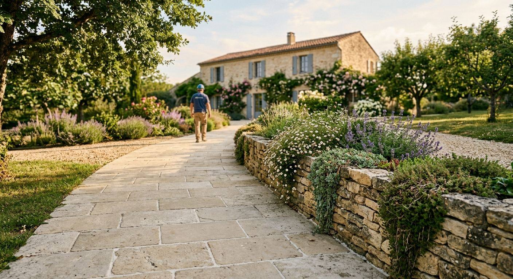
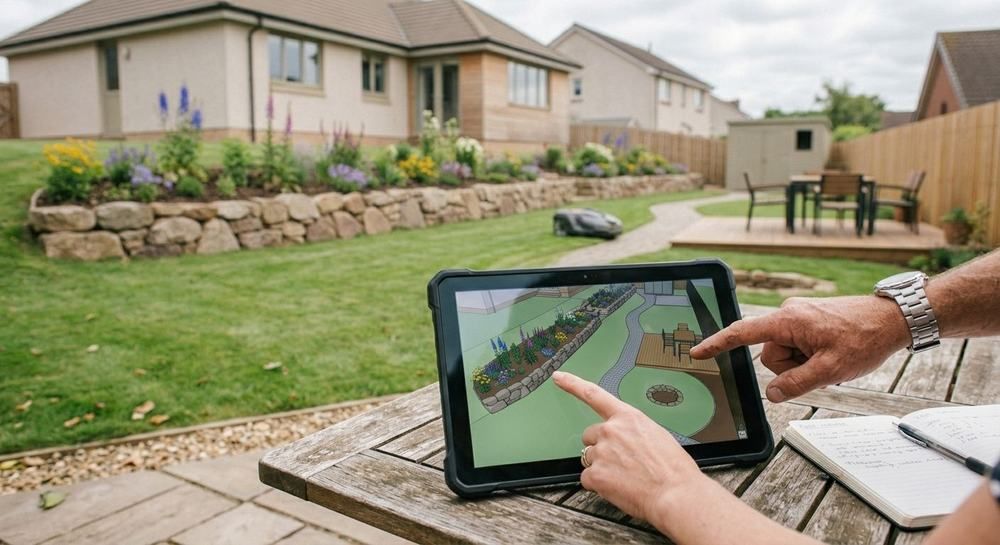
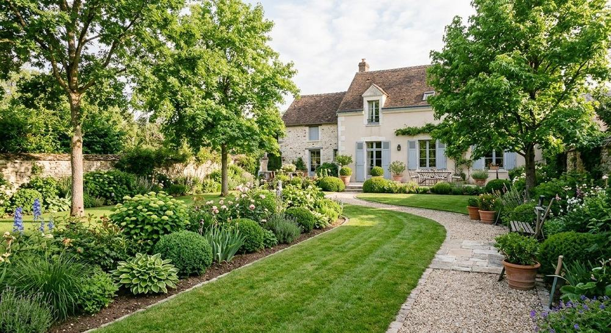
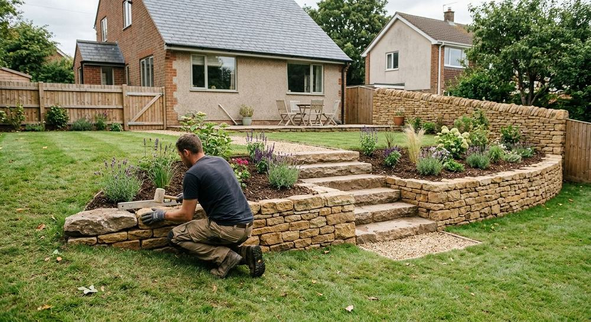
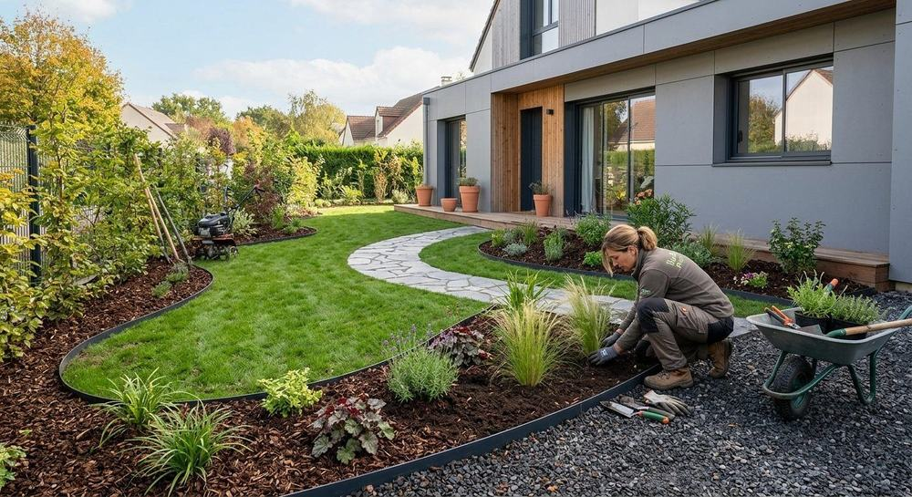
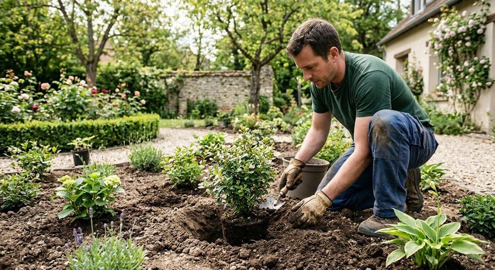
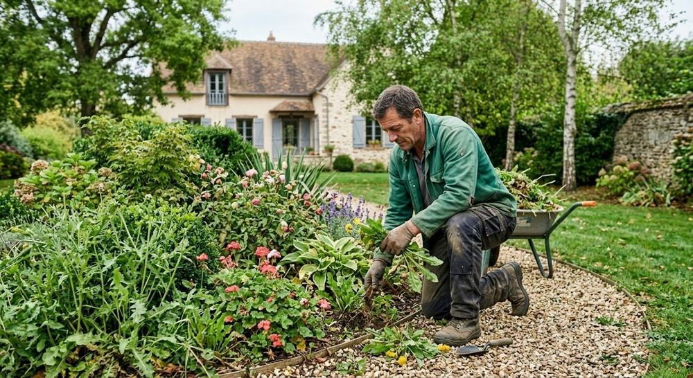
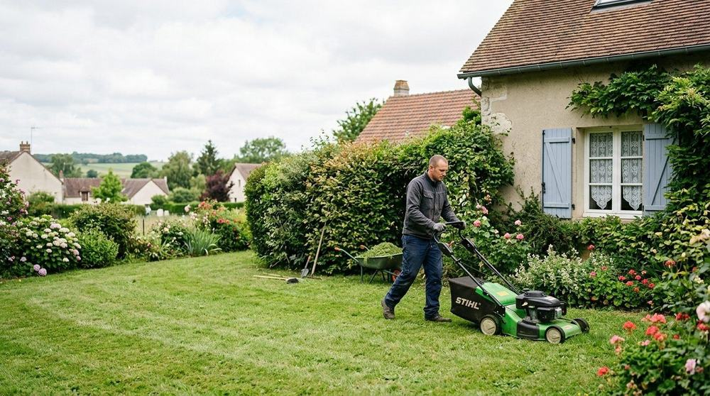
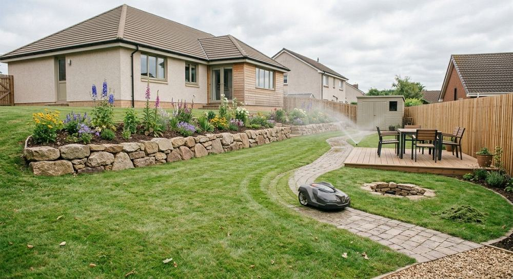
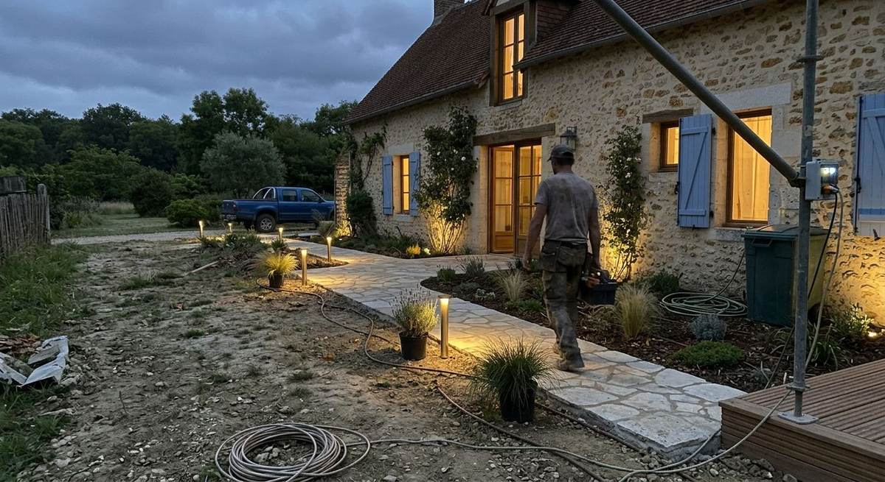

Réalisations
Des jardins vus de près
Un aperçu des univers de jardin qu'Alban Vayer, paysagiste à Beynes, crée et entretient.



Créations
Aménager, planter, construire



Photos d'illustration.
Entretien
Des jardins qui gardent leur forme



Photos d'illustration.

Votre jardin sera le prochain ?
Racontez votre projet à Alban Vayer, il vous répond directement.